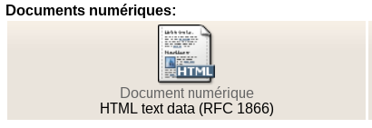

Ajout d'un document numérique
Introduction⚓
ConceptDocument numérique⚓
Les documents numériques sont des documents stockés sur un support informatique.
Dans PMB, les documents numériques peuvent être spécifiés de deux façons différentes :
un fichier
Le document est enregistré dans la base de données, ou dans un répertoire.
un lien (URL)
Seul le chemin d'accès au document est stocké.
Chaque document numérique est attaché à une notice.
Il est ainsi possible de joindre :
une copie du sommaire à ouvrage scientifique.
une photo de la pochette ou un lien vers un site proposant des extraits à écouter d' un cd audio.
une copie d'un article de périodique, ou le lien vers un portail numérique permettant de le consulter dans son intégralité.
...
ConceptVignette⚓
Un document numérique est représenté par une vignette (une petite image de la taille d'une icône) dans le catalogue de PMB.
ConceptEnregistrement des documents numériques⚓
Si le document numérique attaché à une notice est un fichier (par exemple un PDF), il peut :
- être copié dans la base de données du logiciel,
- être copié dans un répertoire accessible par le serveur sur lequel est installé PMB.
Enregistrement dans la base⚓
Dans le premier cas (enregistrement dans la base), le contenu du fichier est copié dans la base de données MySQL utilisée par PMB.
Ce choix peut alourdir la base de données. Il permet par contre de sauvegarder l'ensemble des données avec la base.
La taille maximale d'un fichier en base est limitée notamment par la configuration de MySQL (taille de paquet maximale), parfois fixée à 1Mo ou 16Mo.
Copie sur le serveur⚓
Dans le deuxième cas, le fichier est copié dans un répertoire sur le serveur.
Cette copie peut-être réalisée, soit via l'interface de PMB, soit en déposant le fichier sur le serveur (FTP) et en indiquant son emplacement (URL) dans le document numérique de PMB.
Enregistrement en répertoire⚓
Selon le paramétrage, vous pouvez également utiliser le formulaire d'ajout de document numérique dans PMB pour enregistrer le fichier du document numérique sur le serveur, sans recopier son contenu dans la base de données MySQL.
Pour plus d'informations, voir le Guide de l'administrateur PMB.
ConceptIndexation des documents numériques⚓
L'indexation des documents numériques permet de créer un index pour une recherche en texte intégral (full text).
Les formats actuellement acceptés par PMB pour l'indexation sont :
les fichiers texte (.TXT)
les fichiers PDF (sous réserve de l'installation du logiciel libre pdftotext sur le serveur)
les fichiers HTML (pages web)
les fichiers OpenOffice (Calc, Impress, Writer, Base, Draw)
Paramétrage du statut de document numérique⚓
Il est possible de gérer la visibilité des documents numériques sur la partie publique grâce aux statuts de documents numériques.
Ces statuts se paramètrent dans Administration > Documents numériques > Statuts
Il est possible d'ajouter un nouveau statut en cliquant sur le bouton Ajouter un statut.
Ajout d'un nouveau statut de document numérique⚓
Ce statut doit avoir un libellé, par lequel il sera reconnu en gestion.
Il est possible de lui adjoindre une couleur d'affichage, pour différencier les documents numériques de statut différent.
Si le libellé OPAC est renseigné, le texte apparaîtra sur le catalogue en ligne dans l'affichage du document numérique.
Ajouter un document numérique⚓
ProcédureComment ajouter un document numérique à une notice⚓
Cataloguer la notice correspondante
Remarque
On peut indexer un document numérique de type URL rattaché à une notice de document (monographie), mais aussi à une notice de périodique, un bulletin ou un article.
Sous la notice, cliquez sur
Ajouter un document numériqueComplétez le formulaire d'ajout d'un document numérique
Vous pouvez :
définir le nom du document
sélectionner une vignette à partir d'un fichier image.
sélectionner la localisation de ce document numérique.
sélectionner un fichier du document stocké sur votre ordinateur (dans ce cas, vous ne devez pas spécifier d'URL)
cocher extraire les fichiers si le fichier du document est une archive zip et si son contenu doit être traité
sélectionner si vous souhaitez enregistrer le document dans la base ou l'uploader vers (le télécharger vers) un emplacement prédéfini sur le serveur.
définir une URL (dans ce cas, vous ne devez pas spécifier de fichier du document)
cocher indexer si le document numérique doit être indexé (si son contenu doit pouvoir être recherché dans PMB)
Truc & astuce
Dans le cas où :
il n'y a pas eu sélection d'une vignette à partir d'un fichier image
Mimetype par défaut est sélectionné dans le champ Forcer l'icône de la vignette en
alors PMB identifie l'extension du document numérique et affiche une vignette représentant le type de fichier.
Par exemple pour un document HTML :
Il est possible de Forcer l'icône de la vignette et de choisir un Mimetype différent de celui du fichier :
Ainsi la vignette affichée sera d'un type différent du document numérique importé dans PMB.
Nom du document⚓
Vous pouvez définir un nom pour le document ou le laisser vide. S'il n'est pas rempli, le nom du document sera généré à partir du nom du fichier sélectionné ou de l'URL définie.
Vignette⚓
La vignette définit la forme que prend l'icône permettant d'afficher le contenu du document numérique. Cette icône est visible sous la notice en gestion comme en OPAC (selon la visibilité de votre notice dans l'OPAC).
PMB affiche la première page du document comme vignette par défaut. Les URL disposent par défaut d'une icône URL.
A cette icône peut être substituée une autre image. La vignette en résultant est redimensionnée pour correspondre à la taille maximale paramétrée.
Fichier du document⚓
Ce champ permet de sélectionner un fichier local et de l'uploader (le télécharger) sur le serveur, soit directement dans la base, soit dans un emplacement défini pour cet usage, ce qui est conseillé, surtout en cas de nombreux documents numériques dans la base.
Attention
Fichier du document et URL du document s'excluent mutuellement, créez deux documents numériques distincts si vous souhaitez mettre ces deux types de contenu sous une même notice.
Extraire les fichiers de l'archive⚓
Cette option permet d'ajouter en une seule fois plusieurs documents numériques à une notice : en attachant un fichier zip à une notice et en cochant cette case.
Enregistrer dans la base ou Uploader vers⚓
Enregistrer dans la baseconsiste à recopier l'intégralité du fichier du document numérique dans la base de données. Le document numérique ne correspond pas dans ce cas à un fichier qui va se situer dans l'arborescence du serveur, il est intégré dans la base.Uploader verspermet de sélectionner un emplacement préalablement paramétré sur le serveur.Pour plus d'informations, voir le Guide de l'administrateur PMB.
URL du document⚓
Si ce document est accessible sur le réseau, l'URL permet d'en définir l'adresse.
Dans ce cas, l'icône affichée pour le document numérique correspond à un lien vers cette URL.
Indexer ce document numérique⚓
Indexer le documentpermet de rechercher sur son contenu depuis les formulaires de recherche de PMB : en rechercheAuteur/titreouMulti-critèrescôté gestion, en recherche simple et en recherche Multi-critères dans l'OPAC. Ce paramètre est activable via le paramètreindexation_docnumaccessible depuisAdministration>Outils>ParamètresEnregistrerUne fois enregistré, le document numérique est visible sous la notice, entre le tableau contenant les exemplaires déjà enregistrés (si il existe) et la zone d'ajout d'exemplaires.
ConseilImages⚓
Si vous ajoutez une image en tant que document numérique, une vignette sera générée à partir d'une miniature de l'image.
Modifier un document numérique⚓
Pour modifier un document numérique déjà présent dans la base, cliquer sur le nom de celui-ci (sous la vignette).
L'interface de modification d'un document numérique est identique à l'ajout d'un document numérique.
Pour visualiser le document numérique, cliquez sur la vignette.
Exemple⚓
ExempleAjout d'un PDF avec contenu indexé⚓
Cet exemple décrit l'ajout sur le serveur d'un PDF avec contenu pouvant être recherché, puis la vérification de son indexation par une recherche simple sur tous les champs.
Notre exemple utilise le PDF librement accessible sur le site CAIRN intitulé "La bibliothèque pour les tout-petits : un travail au long cours..." de M. Chouvy.
Cataloguez la notice correspondante
Sous la notice, cliquez sur
Ajouter un document numérique
Complétez le formulaire d'ajout d'un document numérique
Sélectionnez le Fichier PDF à uploader.
Cocher Indexer ce document numérique si besoin pour que le PDF soit indexé et que son contenu puisse être recherché ensuite depuis les formulaires de recherche de PMB. Les autres champs sont facultatifs : le Nom sera repris du nom du fichier PDF, en l'absence de vignette sélectionnée la première page du document PDF sera affichée.
Enregistrer
Le PDF est visible sous la forme d'une icône sous la notice.
On peut ensuite vérifier l'indexation en faisant une recherche sur le contenu du PDF dans PMB.
Catalogue> Recherche :Toutes notices>Auteur/titre
Le contenu des documents numériques indexés peut être cherché dans la recherche auteur/titre, selon votre paramétrage.
Cocher
Documents numériquesà droite de Tous les champs
En cochant cette case, votre recherche portera sur les champs habituels de la recherche tous champs (titres, auteurs, notes, indexations, ...) et également sur le contenu indexé de vos documents numériques. A noter, la case Documents numériques peut être cochée par défaut selon votre paramétrage.
Cherchez un mot ou une expression absent de la notice et du reste de votre base, mais présent dans le contenu du PDF, ici pour exemple, le terme "budget"
Le mot budget ne figure ni dans la notice ni dans le reste du catalogue utilisé pour cet exemple mais bien dans le PDF. Ce mot a été repéré par une lecture préalable du PDF.
Validez et affichez les résultats, la notice apparaît bien en résultat.